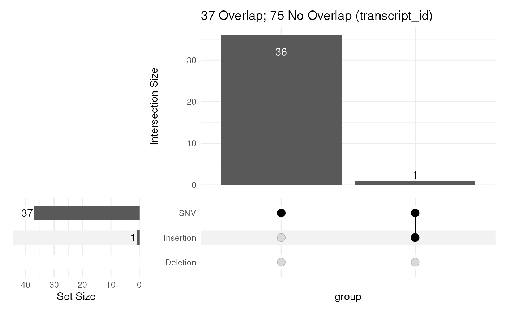
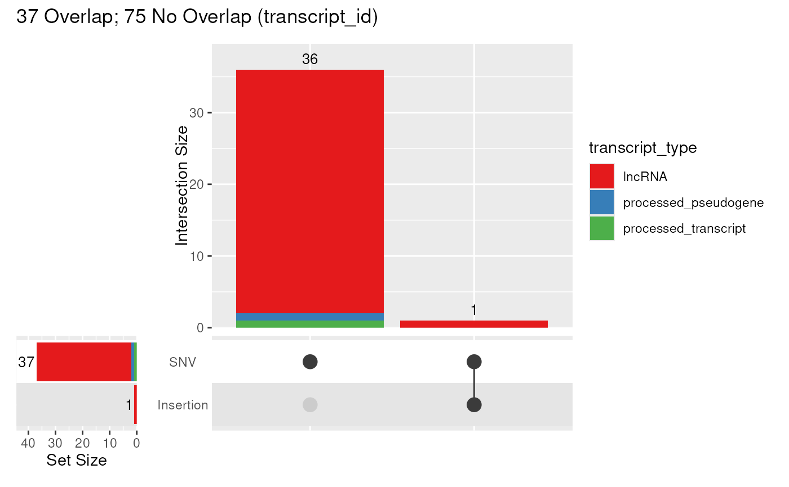

Produce an UpSet plot showing unique values from a given column
Usage
upsetVarByCol(
gr,
var,
alt_col = "ALT",
mcol = "transcript_id",
...,
fill = NULL,
fill_scale = scale_fill_discrete(),
expand_sets = 0.2,
hj_sets = 1.1,
expand_intersect = 0.1,
vj_intersect = -0.5,
label_size = 3.5,
title
)Arguments
- gr
GRanges object with ranges representing a key feature such as exons
- var
GRanges object with variants in a given column
- alt_col
Column within
varcontaining the alternate allele- mcol
The column within
grto summarise results by- ...
Passed to SimpleUpset::simpleUpSet
- fill
Optional column in gr used to fill intersections and sets
- fill_scale
Discrete ggplot2 scale for filling bars. Ignored if
fill = NULL- expand_sets
Expand the set-size x-axis by this amount
- hj_sets
Horizontal adjustment of set size labels
- expand_intersect
Expand the intersection y-axis by this amount
- vj_intersect
Vertical adjustment of intersection size labels
- label_size
Control the size of both intersection and sit size labels
- title
Summary title to show above the intersection panel. Can be hidden by setting to NULL
Details
Take a set of variants, classify them as SNV, Insertion and Deletion, then using a GRanges object, produce an UpSet plot showing impacted values from a given column
Examples
library(rtracklayer)
library(VariantAnnotation)
library(ggplot2)
gtf <- import.gff(
system.file("extdata/gencode.v44.subset.gtf.gz", package = "transmogR"),
feature.type = "exon"
)
vcf <- system.file("extdata/1000GP_subset.vcf.gz", package = "transmogR")
var <- rowRanges(readVcf(vcf, param = ScanVcfParam(fixed = "ALT")))
upsetVarByCol(gtf, var)

upsetVarByCol(
gtf, var, fill = "transcript_type",
fill_scale = scale_fill_brewer(palette = "Set1")
)
